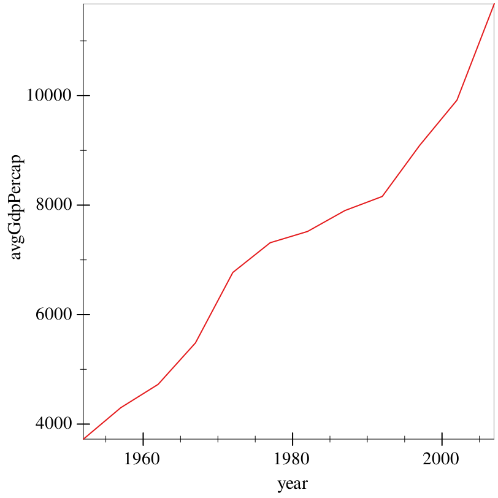
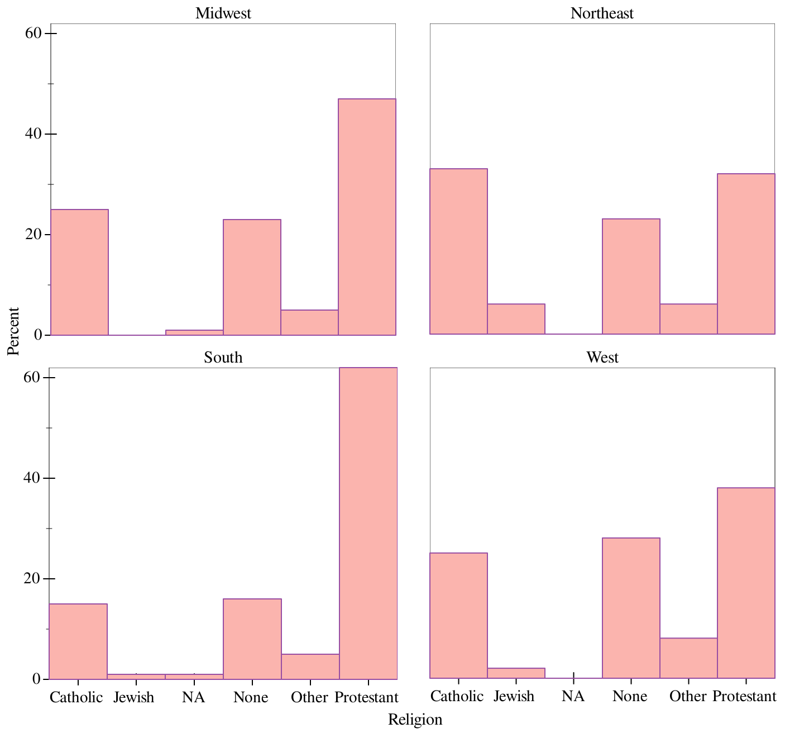

6 Data wrangling, 101
Graphite does some of the work for us with regards to data processing. Note the 'count and 'prop modes in the earlier bar charts: we didn’t have to handle that. But Graphite is not a data wrangling library, and oftentimes it makes more sense to process our data first.
For example, in the last example, we got GDP per capita summary statistics for each continent. But what if we want the average, global GDP per capita over time? That’s too complex of a transformation for Graphite to do for us.
For this purpose, we need the Sawzall library, whose documentation is available at Sawzall: A grammar for chopping up data. This library is designed to take in data-frames, and produce new ones with some transformation applied – with operations chaining together using the threading library.
Take all the data in each year, ignoring country,
average the GDP per capita within each year,
then collect the results of that sum into a new data-frame.
> (define (sum vec) (for/sum ([v (in-vector vec)]) v)) > (define (avg vec) (/ (sum vec) (vector-length vec)))
> (~> gapminder (group-with "year") (aggregate [avgGdpPercap (gdpPercap) (avg gdpPercap)]) show)
data-frame: 12 rows x 2 columns
┌──────────────────┬────┐
│avgGdpPercap │year│
├──────────────────┼────┤
│3725.276045801409 │1952│
├──────────────────┼────┤
│4299.4083448760575│1957│
├──────────────────┼────┤
│4725.812341961976 │1962│
├──────────────────┼────┤
│5483.653046835208 │1967│
├──────────────────┼────┤
│6770.082815282392 │1972│
├──────────────────┼────┤
│7313.166420794365 │1977│
└──────────────────┴────┘
6 rows, 0 cols elided
(use (show df everything #:n-rows 'all) for full frame)
The ~> operator is effectively "spicy function composition"; (~> h g f x) translates at compile-time to (f (g (h x))). We use it here to express the idea of "do-this-then-that".
(group-with "year") takes gapminder, and groups it with respect to the variable "year". This tells sequential operations that we want to treat each different possibility of year seperately.
(aggregate [avgGdpPercap (gdpPercap) (avg gdpPercap)]) aggregates each group into a single value. avgGdpPercap tells us what the new column name should be, (gdpPercap) tells us that we want to bind the variable gdpPercap as a vector in the body, and (avg gdpPercap) computes the average value of each vector.
This is a lot to break down, but more or less it takes each year, gets all the GDP per capita values that correspond to it, and averages them.
This also strips down the group structure, since we now only have one row for each year.
show prints out the result, and returns nothing, being the last thing in the pipeline.
> (~> gapminder (group-with "year") (aggregate [avgGdpPercap (gdpPercap) (avg gdpPercap)]) (graph #:data _ #:mapping (aes #:x "year" #:y "avgGdpPercap") (lines))) 
This works, but isn’t a very useful example, and doesn’t teach us anything about how to work with NA values, et cetera. So, for a more complex example, we’ll take a look at the GSS again. We saw already that bar can plot counts and relative frequencies. However, oftentimes it makes more sense to get the data in the shape you want it first, and then have Graphite focus its effort on plotting the data, rather than messing with it on-the-fly.
Take our individual-level data,
group it with respect to region, and then religion within region,
summarize each religion into a count of respondents,
then calculate the percentage of each religion within region.
> (~> gss (group-with "bigregion" "religion") show)
data-frame: 2867 rows x 33 columns
groups: (religion bigregion)
┌─────┬─────┬─────────┬────┬────────┬────────┐
│obama│grass│marital │kids│siblings│relig │
├─────┼─────┼─────────┼────┼────────┼────────┤
│NA │NA │Married │1 │6+ │Catholic│
├─────┼─────┼─────────┼────┼────────┼────────┤
│1 │Legal│Married │0 │4 │Catholic│
├─────┼─────┼─────────┼────┼────────┼────────┤
│NA │Legal│Married │2 │6+ │Catholic│
├─────┼─────┼─────────┼────┼────────┼────────┤
│1 │Legal│Married │2 │6+ │Catholic│
├─────┼─────┼─────────┼────┼────────┼────────┤
│NA │NA │Married │0 │2 │Catholic│
├─────┼─────┼─────────┼────┼────────┼────────┤
│1 │Legal│Separated│4+ │4 │Catholic│
└─────┴─────┴─────────┴────┴────────┴────────┘
2861 rows, 27 cols elided
(use (show df everything #:n-rows 'all) for full frame)
> (~> gss (group-with "bigregion" "religion") (aggregate [count (bigregion) (vector-length bigregion)]) show)
data-frame: 24 rows x 3 columns
groups: (bigregion)
┌─────────┬─────┬──────────┐
│bigregion│count│religion │
├─────────┼─────┼──────────┤
│Midwest │172 │Catholic │
├─────────┼─────┼──────────┤
│Midwest │3 │Jewish │
├─────────┼─────┼──────────┤
│Midwest │5 │NA │
├─────────┼─────┼──────────┤
│Midwest │157 │None │
├─────────┼─────┼──────────┤
│Midwest │33 │Other │
├─────────┼─────┼──────────┤
│Midwest │325 │Protestant│
└─────────┴─────┴──────────┘
18 rows, 0 cols elided
(use (show df everything #:n-rows 'all) for full frame)
> (define (v/ vec c) (vector-map (λ (x) (/ x c)) vec))
> (~> gss (group-with "bigregion" "religion") (aggregate [count (bigregion) (vector-length bigregion)]) (create [frequency ([count : vector]) (v/ count (sum count))] [percentage (frequency) (round (* frequency 100))]) show)
data-frame: 24 rows x 5 columns
groups: (bigregion)
┌─────────┬─────┬─────────┬──────────┬──────────┐
│frequency│count│bigregion│religion │percentage│
├─────────┼─────┼─────────┼──────────┼──────────┤
│172/695 │172 │Midwest │Catholic │25 │
├─────────┼─────┼─────────┼──────────┼──────────┤
│3/695 │3 │Midwest │Jewish │0 │
├─────────┼─────┼─────────┼──────────┼──────────┤
│1/139 │5 │Midwest │NA │1 │
├─────────┼─────┼─────────┼──────────┼──────────┤
│157/695 │157 │Midwest │None │23 │
├─────────┼─────┼─────────┼──────────┼──────────┤
│33/695 │33 │Midwest │Other │5 │
├─────────┼─────┼─────────┼──────────┼──────────┤
│65/139 │325 │Midwest │Protestant│47 │
└─────────┴─────┴─────────┴──────────┴──────────┘
18 rows, 0 cols elided
(use (show df everything #:n-rows 'all) for full frame)
v/ is a helper function to divide every element of a vector by a scalar.
The first clause of this create, [frequency ([count : vector]) (v/ count (sum count))], binds the variable "count" as a vector (hence the annotation), divides each element by the sum of the entire vector, and returns the vector.
When every bound variable is of type vector, the body of that clause should return a vector.
The second clause of this create, [percentage (frequency) (round (* frequency 100))], binds the variable "frequency" as type element, which means that the body will map over each element of the vector implicitly. So, frequency is bound to a number, and we treat it as such, iterating over every element of the column.
We couldn’t do this for the above, because we needed the entire vector at once in order to get the sum.
> (define religion-by-region (~> gss (group-with "bigregion" "religion") (aggregate [count (bigregion) (vector-length bigregion)]) (create [frequency ([count : vector]) (v/ count (sum count))] [percentage (frequency) (round (* frequency 100))]) ungroup))
> (~> religion-by-region (group-with "bigregion") (aggregate [total (percentage) (sum percentage)]) show)
data-frame: 4 rows x 2 columns
┌─────┬─────────┐
│total│bigregion│
├─────┼─────────┤
│101 │Midwest │
├─────┼─────────┤
│100 │Northeast│
├─────┼─────────┤
│100 │South │
├─────┼─────────┤
│101 │West │
└─────┴─────────┘
Looks good! Some error was added by rounding, hence the 101s.
> (graph #:data religion-by-region #:mapping (aes #:x "religion" #:y "percentage" #:fill "religion" #:facet "bigregion") #:x-label "Religion" #:y-label "Percent" #:width 700 #:height 700 (col)) 
Voilà.